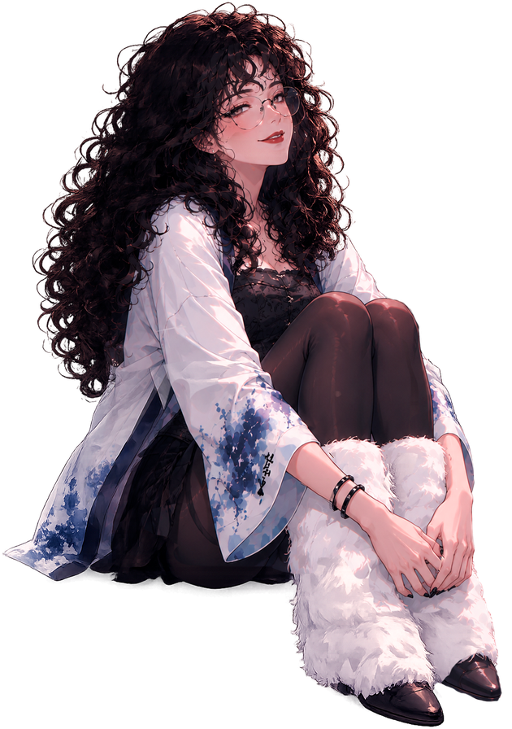
Desarrolladora Unity y de realidad aumentada. Conecto diseño y tecnología para convertir ideas en experiencias interactivas listas para producción.
Soy Diseñadora Digital y Multimedia. Como programadora principal en Dardranight Studios desarrollé experiencias de realidad aumentada, sitios interactivos y juegos para marcas, desde la investigación y la interfaz hasta la programación y la puesta en producción.
Gameplay, sistemas, navegación, progresión e integración de animaciones.
8th Wall, A-Frame y Zappar: face tracking, hand tracking y minijuegos.
JavaScript, TypeScript, HTML y CSS para experiencias interactivas.
UI/UX, diagramación en Figma, game design y diseño de niveles.
Juego de batallas de cartas con modos de juego, mazos, personalización y recompensas. Fui la desarrolladora frontend en un equipo con una diseñadora y un desarrollador backend.
Diseñé y programé Mochipoderes, un modo de cartas con construcción de mazos, energía y decisiones tácticas, además de la IA de las partidas contra la máquina.
Navegación, tutoriales, personalización, stickers, estadísticas, gestión de mazos, desbloqueos y recompensas.
Montaje de pantallas en Unity, spritesheets y Animator Controllers.
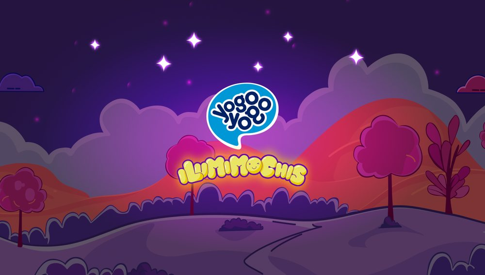
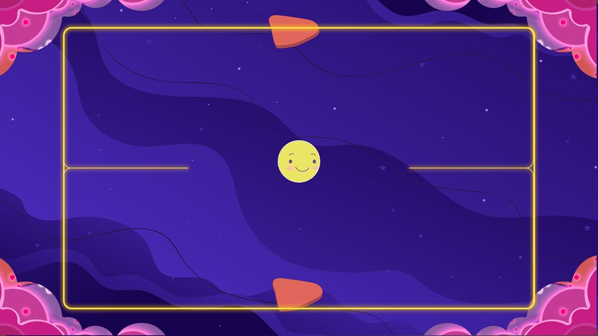
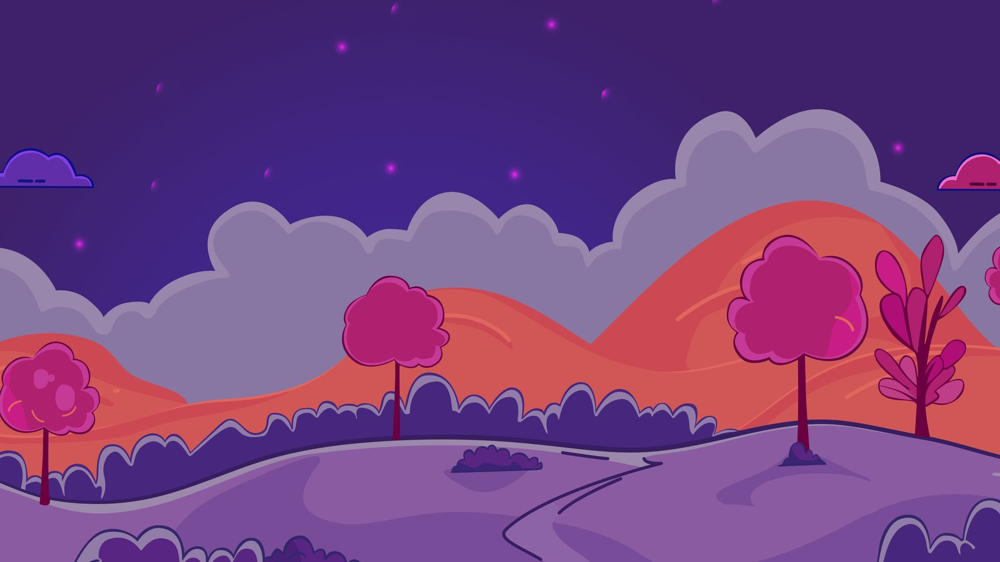
Experiencia de horror psicológico que rompe la cuarta pared: una tierna fiesta de cumpleaños donde el juego, el computador y el teléfono del jugador empiezan a mezclarse.
Unity Developer · Gameplay Programmer · Montaje.
Los sistemas que comunican las partes del juego entre dispositivos y las mecánicas que hacen que cada acción tenga consecuencias. Unity 6, URP y C#.
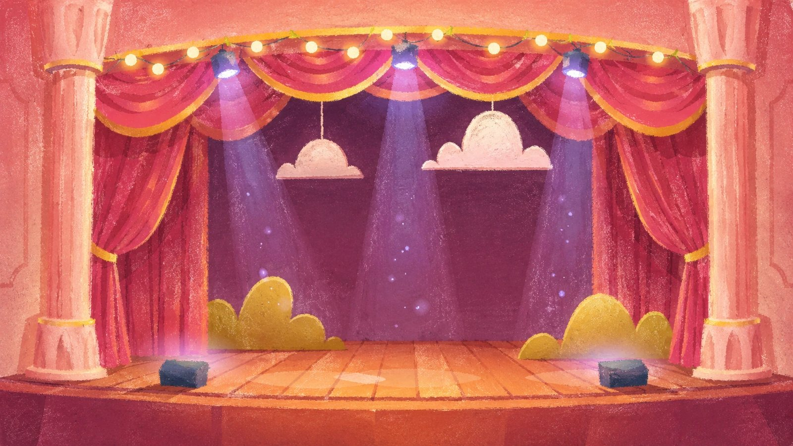
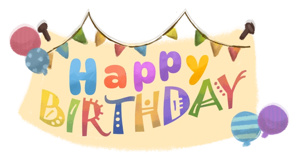
Filtros y experiencias WebAR que se abren desde el navegador del teléfono. Como programadora principal, desarrollé la interacción, el tracking y el despliegue de cada experiencia.
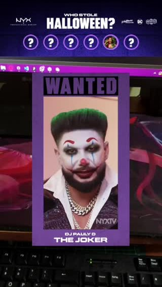
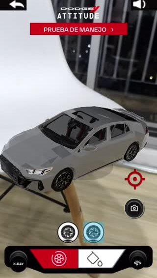
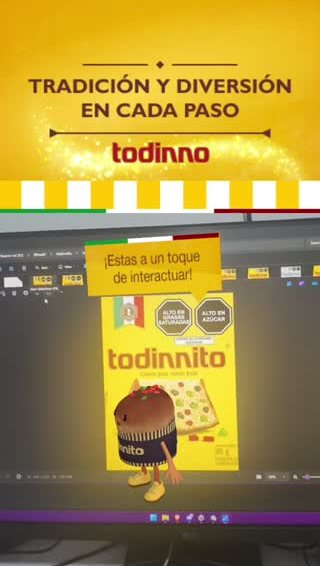
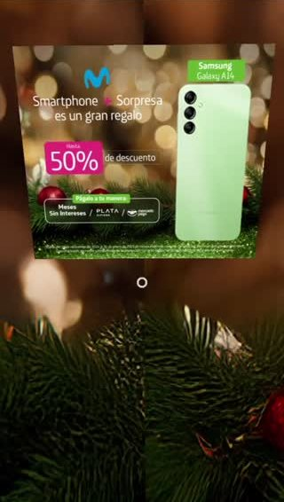
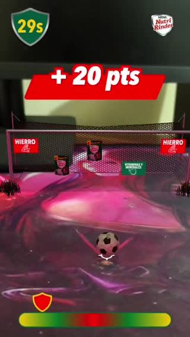
TambiénCoca-Cola This or That · Claro face filter, hand tracking y banner · Alpina Dino · HP Printer · Fútbol Penaltis
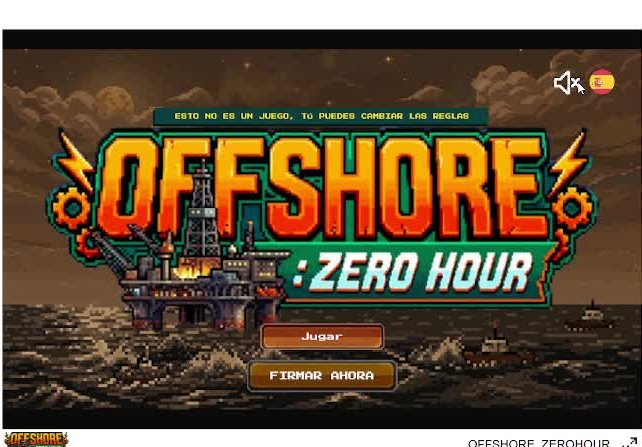
Juego pixel art donde me encargué del proceso completo: investigación de game design, diseño de niveles, programación, diagramación de UI y sprites con apoyo de IA.
Game design, diseño de niveles, programación en Unity, UI y sprites con apoyo de IA generativa.
Women Game Jam · UNGames (U. Nacional) · U. de La Sabana · U. Militar Nueva Granada · U. Colegio Mayor de Cundinamarca.
Bomberman, Long Cat, Flappy Bird y Dino Chrome como ejercicios de mecánicas y arquitectura.